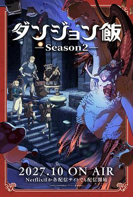

迷宫饭 第二季 / ダンジョン飯 第2期
又名：Delicious in Dungeon Season 2
作品信息
| 导演 | 宫岛善博 |
| 编剧 | 上野贵美子 |
| 主演 | 熊谷健太郎 / 千本木彩花 / 泊明日菜 / 中博史 / 神户光步 / 早见沙织 / 三木晶 / 川田绅司 / 野上翔 / 森田凉花 / 加藤涉 / 高桥李依 / 富田美忧 / 奈良彻 / 广濑裕也 / 河村萤 / 大塚芳忠 / 志村知幸 / 小林优 / 井上和彦 / 所河仁美 / 长谷川育美 / 高桥良辅 / 村濑迪与 / 日笠阳子 / 志田有彩 / 鬼头明里 / 古谷佳乃 / 村濑步 / 内山昂辉 / 伊濑茉莉也 / 武田华 / 菊池心 / 筱原侑 / 岸尾大辅 / 三上哲 / 依田菜津 / 大隈健太 |
| 类型 | 动画 / 奇幻 / 冒险 |
| 制片国家/地区 | 日本 |
| 语言 | 日语 |
| 首播 | 2027-10(日本) |
| 季数 | 2 |
| 集数 | 12 |
| IMDb | tt39494494 |
最后一次看到是 2026-08-12T21:09:46+08:00 · 豆瓣原页